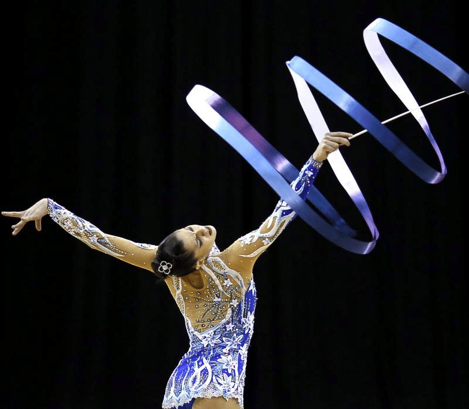
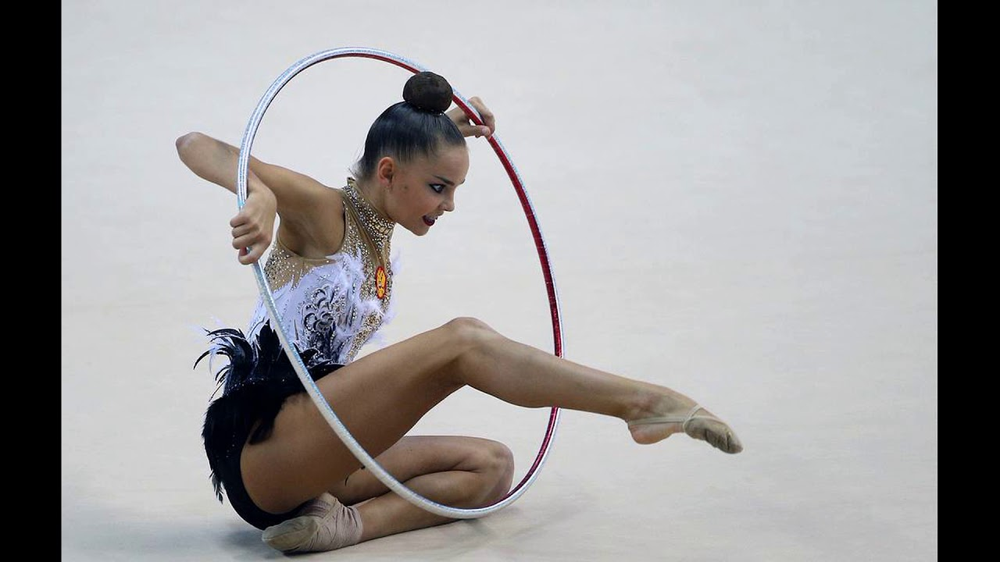
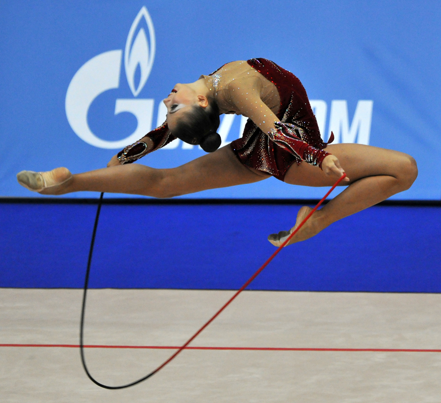
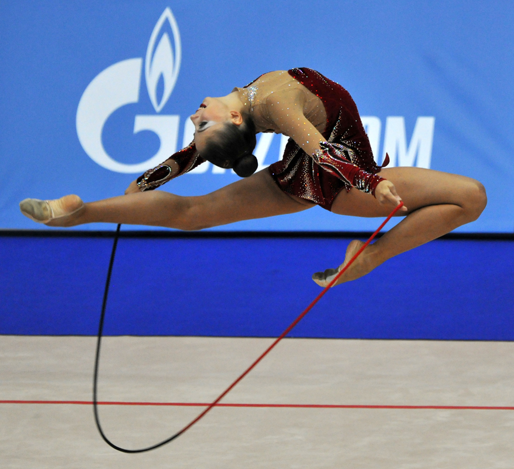

Художественная гимнастика
Что это за вид спорта
Худо́жественная гимна́стика — вид спорта, заключающийся в выполнении под музыку
различных гимнастических и танцевальных упражнений и элементов без предмета,
а также с предметом (скакалка, обруч, мяч, булавы, лента). Один из самых изящных видов спорта. В СССР художественная гимнастика как вид спорта возникла и сформировалась в 1940-е годы.
С 1984 года — олимпийский вид спорта. До недавнего времени исключительно женский вид спорта, однако с конца XX века, благодаря усилиям японских гимнастов,
стали проводиться соревнования и между мужчинами.
Художественная гимнастика — сравнительно молодой вид спорта,
своим появлением он обязан мэтрам балета Мариинского театра.
За небольшой срок своего существования этот вид спорта завоевал мировое признание и имеет многочисленных поклонников во всех уголках земного шара
Основные виды упражнений в художественной гимнастике:


 
